Что за игра
- Кооп-хоррор с паркуром от первого лица
- 1–4 игрока
- PC, Steam
«Lethal Company + паркур из Dying Light»
- Команда хакеров из фургона взламывает системы корпораций
- Внутрь хакеры попадают через NetBox — свою программу-базу
- Изнутри система выглядит как закрытый город из знакомых постсоветских мест, где нарушены правила
- Охрана системы — и монстры, и само пространство
- Цель захода: выполнить задачи, донести данные до NetBox и выйти, пока система не заблокировала выход
Концепт-арт
Вход и база


Сервисы — здания и районы
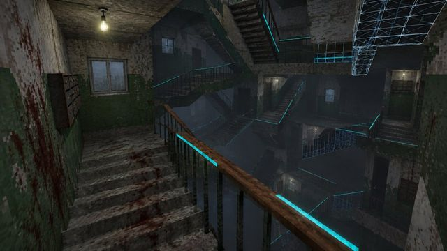
Подъезд-лабиринт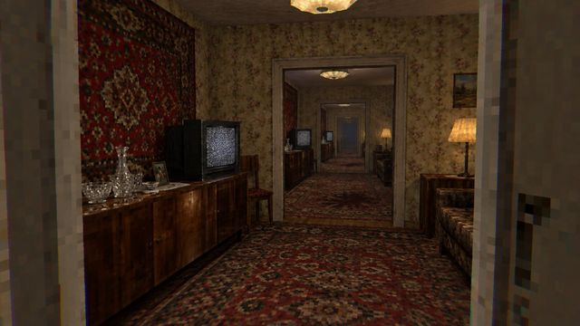
Квартира-петля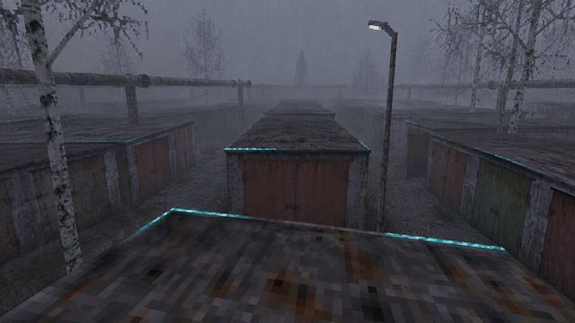
Гаражи: бег по крышам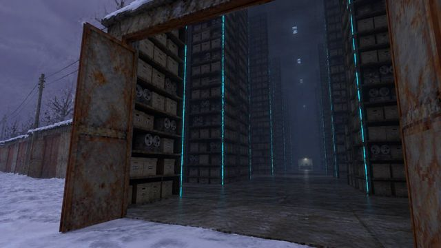
Гаражи: внутри архив больше, чем снаружи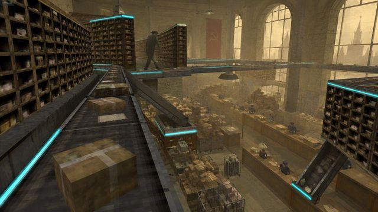
Почтамт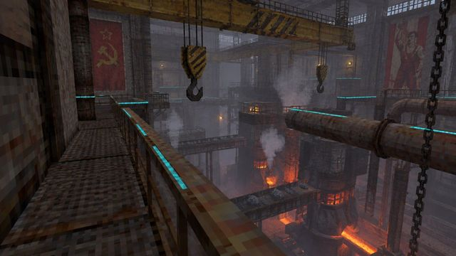
Завод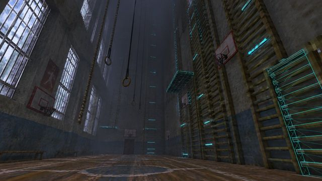
Школьный спортзал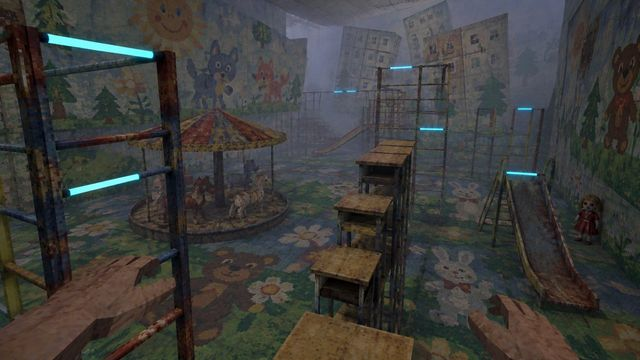
Детсад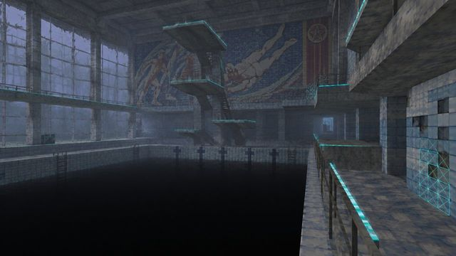
Бассейн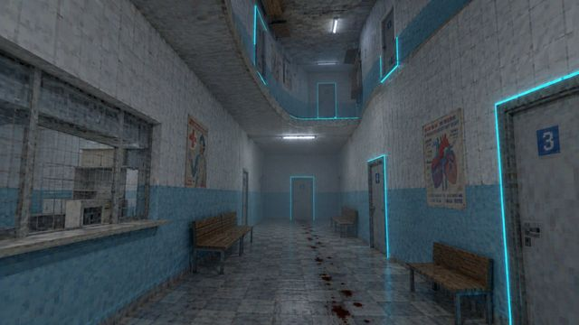
Поликлиника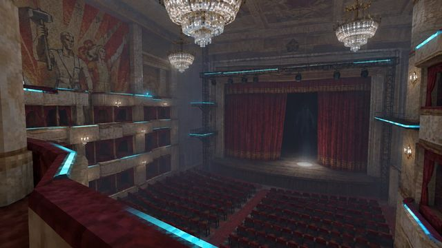
Дворец культуры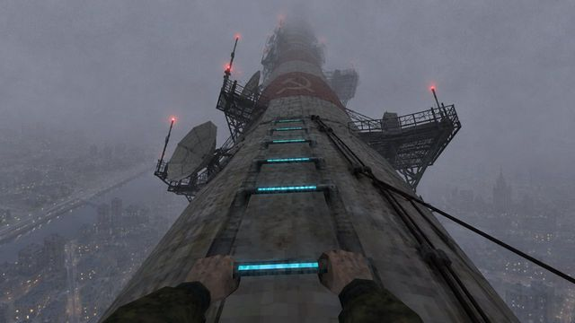
Телебашня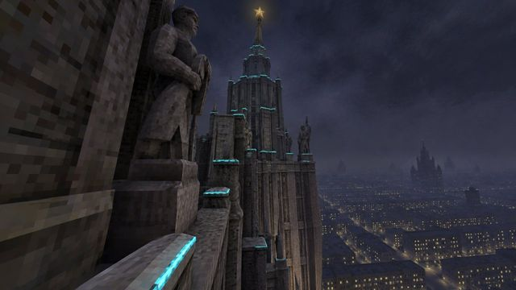
Сталинская высотка — финальная цель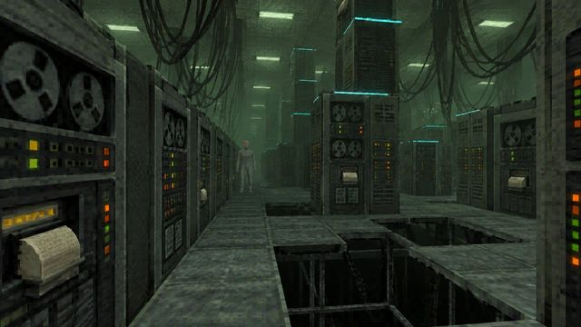
Зал ЭВМ — ядро системы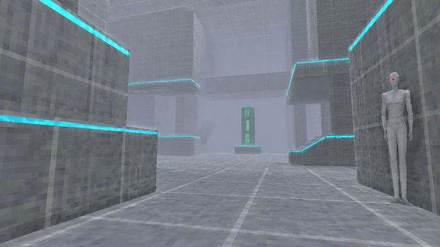
Чистый зал данных